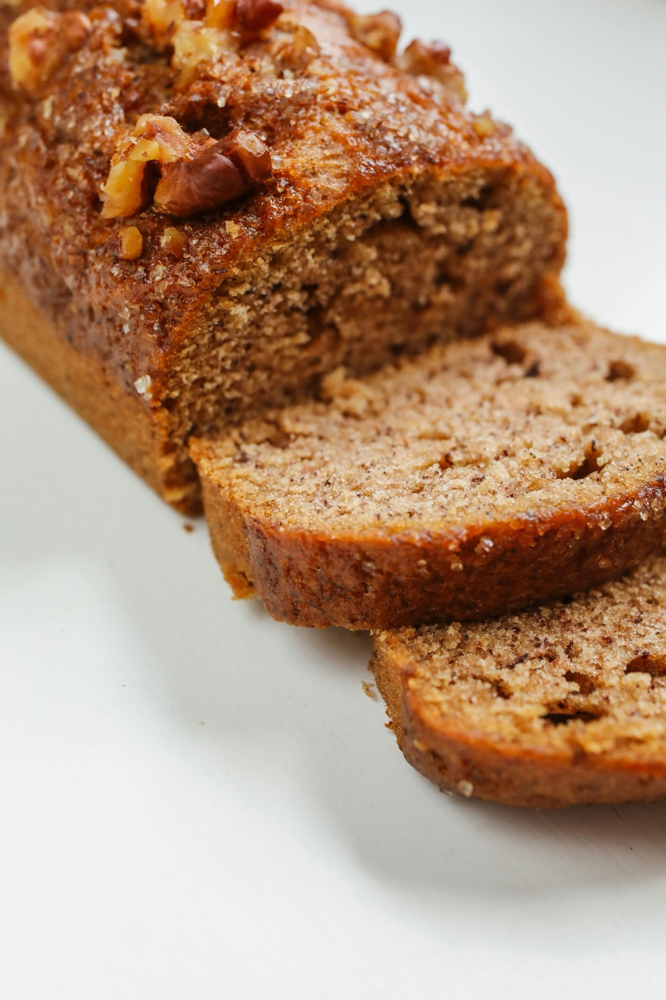
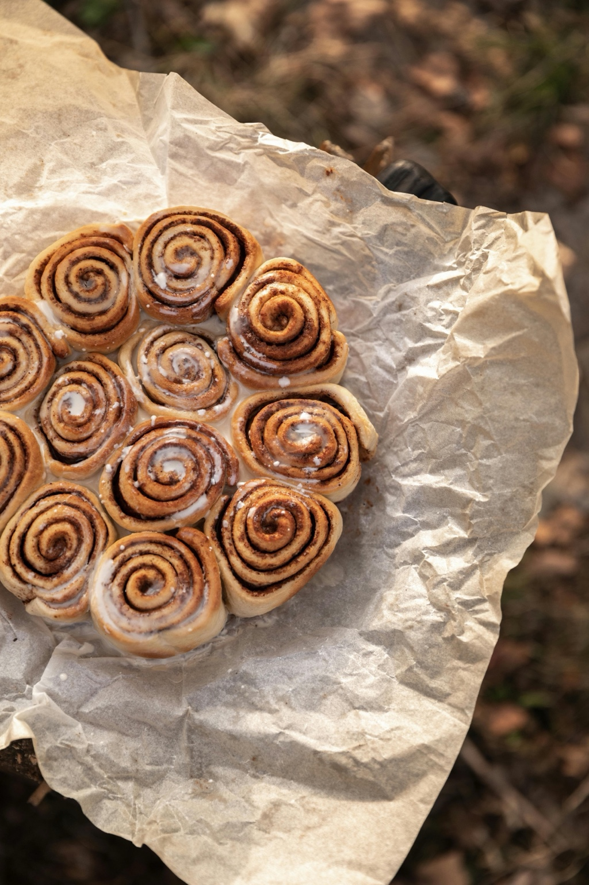
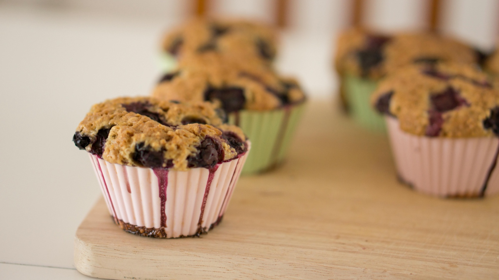
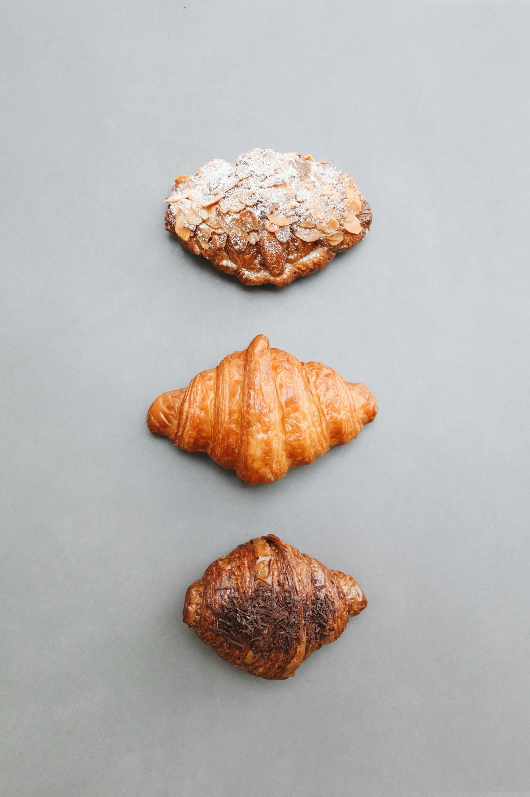
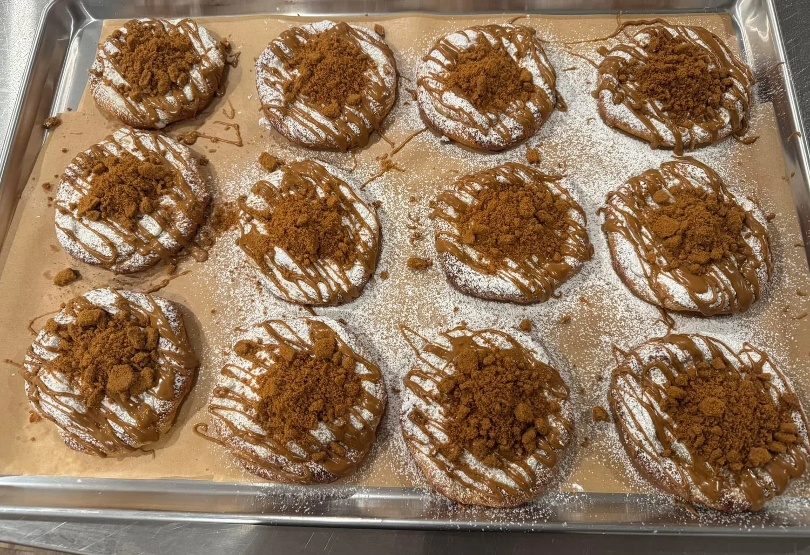

Small-Batch Baking
Everything is baked fresh in limited quantities each week to ensure quality, freshness, and attention to detail.

Everything is baked fresh in limited quantities each week to ensure quality, freshness, and attention to detail.
We use only high-quality ingredients you can trust — flour, water, salt, and carefully selected additions.
Each loaf is slowly fermented and handcrafted, creating deeper flavor and better texture.

Classic naturally fermented sourdough with a crisp crust and soft, flavorful interior.

Specialty loaves like banana bread, pumpkin bread, and other small-batch favorites made with wholesome ingredients.

Soft, fluffy cinnamon rolls with rich filling and homemade icing.

Soft, tender blueberry muffins bursting with juicy berries and baked fresh in small batches.

Flaky, buttery croissants crafted over several days using traditional French lamination techniques and slow fermination for exceptional flavor and texture.

Rotating seasonal treats and small-batch baked goods available throughout the week.
My sourdough micro bakery was created in 2024 out of my love for homemaking and serving my family and friends in the best way I can. What I love most is creating sourdough offerings that are high quality with a plethora of health benefits, but are also incredibly delicious.
With an interst in nutrition, I was instantly intrigued and envious, as making sourdough bread had long been on my list of culinary enterprises. I immersed myself in the online global sourdough communities, connecting with amazing sourdough bakers online who quickly became my mentors and has played an influential part in my sourdough expansion..
My cottage bakery is located in Rogersville, MO providing organic artisan sourdough bread along with high protein sourdough pizza dough, pastries, and more. My vision was to provide Rogersville, MO and surrounding areas the access to gut-healthy, preservative-free, high quality and truly delicious loaves of bread and pastries.
“Everything is fresh and handmade with love! The pancakes were devine. We didn't even use syrup. The loaves are to die for and the entire family loves them. Fantastic price for some Homemade love”
“Love this homemade lith love and pure ingrediants, I highly recommend to anyone looking for the best Sourdough goodies in the Ozarks!”
“This is what passion in action looks (& tasts) like. Tempesst pours so much love and care into everything she does and it shows. We got the sourdough pancake mix and it is phenomenal! I really don't care for pancakes, and my kids are the waffle people, but we devoured these and had to make a second batch. Definitely recommend!”
“Oh my gosh.....simply the BEST!!! Made with love. The pancake mix is amazing! EVERYTHING IS AMAZING You must try it! You'll fall in love!”
“The finest quality ingredients and completely delicious!”
Browse this week's menu and place your order while fresh bakes are available.
View This Week's Menu